16～18号道路、浅红市、浅红道馆
通关后
16号道路
16号道路Bulbapedia 原图
16号道路连接玉虹市和17号道路。往南去浅红市的路对行人来说很危险，一定要带上自行车。
| 宝可梦 | 版本 | 方式 | 等级 | 出现率 |
|---|---|---|---|---|
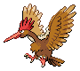 大嘴雀 | 心金 / 魂银 | 草丛 | Lv.27, 29 | 早 40% · 日 40% · 夜 0% |
| 心金 / 魂银 | 草丛 | Lv.26, 28 | 早 50% · 日 50% · 夜 0% | |
| 心金 / 魂银 | 草丛 | Lv.26-28 | 早 0% · 日 0% · 夜 80% | |
| 心金 / 魂银 | 草丛 | Lv.30 | 5% | |
| 心金 / 魂银 | 草丛 | Lv.29 | 早 0% · 日 0% · 夜 10% | |
| 心金 / 魂银 | 草丛 | Lv.27 | 5% | |
| 头锤（A 组树） | ||||
| 心金 / 魂银 | 头锤 | Lv.26-27 | 50% | |
| 心金 / 魂银 | 头锤 | Lv.26-27 | 30% | |
| 心金 / 魂银 | 头锤 | Lv.26-27 | 20% | |
| 头锤（B 组树） | ||||
| 心金 / 魂银 | 头锤 | Lv.29-30 | 80% | |
| 心金 / 魂银 | 头锤 | Lv.29-30 | 20% | |
| 特殊 | ||||
| 心金 / 魂银 | 丰缘音乐 | Lv.26-27 | 20% | |
| 心金 / 魂银 | 丰缘音乐 | Lv.28 | 20% | |
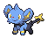 小猫怪 | 心金 / 魂银 | 神奥音乐 | Lv.26-28 | 40% |
爱赶时髦的老爷爷
道路北边的树林深处有一栋房子，被一棵要用居合斩的小树挡着。每天和屋里的老爷爷说话，可以学到一个新的流行语，在简易会话里使用。
17号道路
17号道路Bulbapedia 原图
17号道路的桥架在海面上，一路下坡通往18号道路。在自行车道上骑车的人如果停止踩踏板，车子会继续往南滑行。
| 训练家 | 宝可梦 | 奖金 |
|---|---|---|
| 暴走族 Dale | ₽752 | |
| 暴走族 Reese | ₽720 | |
| 暴走族 Joel | ₽688 | |
| 暴走族 Jacob | ₽688 | |
| 暴走族 Ernest | ₽704 | |
| 暴走族 Aiden | ₽720 | |
| 暴走族 Dan | ₽592 可能和 Theron 进行双打对战 | |
| 暴走族 Theron | 不良蛙 Lv.45 | ₽720 可能和 Dan 进行双打对战 |
| 暴走族 Glenn | ₽688 | |
| 暴走族 Teddy | 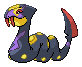 饭匙蛇 Lv.46 | ₽736 可能和 Markey 进行双打对战 |
| 暴走族 Markey | 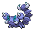 钳尾蝎 Lv.47 | ₽752 可能和 Teddy 进行双打对战 |
| 宝可梦 | 版本 | 方式 | 等级 | 出现率 |
|---|---|---|---|---|
| 大嘴雀 | 心金 / 魂银 | 草丛 | Lv.28, 30 | 早 40% · 日 40% · 夜 0% |
| 心金 / 魂银 | 草丛 | Lv.27, 29 | 早 50% · 日 0% · 夜 0% | |
| 心金 / 魂银 | 草丛 | Lv.29 | 早 0% · 日 20% · 夜 0% | |
| 心金 / 魂银 | 草丛 | Lv.27-29 | 早 0% · 日 0% · 夜 80% | |
| 心金 / 魂银 | 草丛 | Lv.32 | 早 5% · 日 5% · 夜 0% | |
| 心金 / 魂银 | 草丛 | Lv.30, 32 | 早 0% · 日 0% · 夜 15% | |
| 心金 / 魂银 | 草丛 | Lv.29 | 早 5% · 日 0% · 夜 5% | |
| 心金 / 魂银 | 草丛 | Lv.27, 29 | 早 0% · 日 35% · 夜 0% | |
| 特殊 | ||||
| 心金 / 魂银 | 丰缘音乐 | Lv.27-28 | 20% | |
| 心金 / 魂银 | 丰缘音乐 | Lv.29 | 20% | |
| 小猫怪 | 心金 / 魂银 | 神奥音乐 | Lv.27-29 | 40% |
| 道具 | 版本 | 位置 / 获得方法 |
|---|---|---|
| 心金 / 魂银 | 西侧，从北数第二对和第三对路灯之间（隐藏道具） | |
| 心金 / 魂银 | 西侧，从北数第五对和第六对路灯之间（隐藏道具） | |
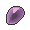 暗之石 | 心金 / 魂银 | 登记暴走族 Reese 的电话后，他有时会送 |
| 觉醒之石 | 心金 / 魂银 | 登记暴走族 Aiden 的电话后，他有时会送 |
18号道路
18号道路Bulbapedia 原图
18号道路从17号道路往东通往浅红市。
| 训练家 | 宝可梦 | 奖金 |
|---|---|---|
| 暴走族 Charles | ₽672 | |
| 养鸟人 Bob | ₽1536 | |
| 养鸟人 Boris | ₽1312 |
| 宝可梦 | 版本 | 方式 | 等级 | 出现率 |
|---|---|---|---|---|
| 大嘴雀 | 心金 / 魂银 | 草丛 | Lv.27, 29 | 早 40% · 日 40% · 夜 0% |
| 心金 / 魂银 | 草丛 | Lv.26, 28 | 早 50% · 日 50% · 夜 0% | |
| 心金 / 魂银 | 草丛 | Lv.26-28 | 早 0% · 日 0% · 夜 80% | |
| 心金 / 魂银 | 草丛 | Lv.30 | 早 5% · 日 5% · 夜 0% | |
| 心金 / 魂银 | 草丛 | Lv.29-30 | 早 0% · 日 0% · 夜 15% | |
| 心金 / 魂银 | 草丛 | Lv.27 | 5% | |
| 头锤（A 组树） | ||||
| 心金 / 魂银 | 头锤 | Lv.26-27 | 50% | |
| 魂银 | 头锤 | Lv.26-27 | 30% | |
| 心金 | 头锤 | Lv.26-27 | 30% | |
| 心金 / 魂银 | 头锤 | Lv.26-27 | 20% | |
| 头锤（B 组树） | ||||
| 心金 / 魂银 | 头锤 | Lv.29-30 | 65% | |
| 心金 / 魂银 | 头锤 | Lv.29-30 | 20% | |
| 心金 / 魂银 | 头锤 | Lv.29-30 | 15% | |
| 特殊 | ||||
| 心金 / 魂银 | 丰缘音乐 | Lv.26-27 | 20% | |
| 心金 / 魂银 | 丰缘音乐 | Lv.28 | 20% | |
| 小猫怪 | 心金 / 魂银 | 神奥音乐 | Lv.26-28 | 40% |
浅红市
浅红市Bulbapedia 原图
浅红市是关都南部最大的城市，位于18号道路和15号道路之间。南边的海滩通往19号道路的海面。想拿下一枚徽章的训练家可以挑战西南边的浅红道馆。伙伴公园在城市北部。
| 宝可梦 | 版本 | 方式 | 等级 | 出现率 |
|---|---|---|---|---|
| 冲浪 | ||||
| 心金 / 魂银 | 冲浪 | Lv.10-20 | 100% | |
| 钓鱼 | ||||
| 心金 / 魂银 | 破旧钓竿 | Lv.10 | 100% | |
| 心金 / 魂银 | 好钓竿 | Lv.20 | 90% | |
| 心金 / 魂银 | 好钓竿 | Lv.20 | 10% | |
| 头锤（A 组树） | ||||
| 心金 / 魂银 | 头锤 | Lv.21-23 | 50% | |
| 魂银 | 头锤 | Lv.21-23 | 30% | |
| 心金 | 头锤 | Lv.21-23 | 30% | |
| 心金 / 魂银 | 头锤 | Lv.21-23 | 20% | |
| 头锤（B 组树） | ||||
| 心金 / 魂银 | 头锤 | Lv.26-34 | 65% | |
| 心金 / 魂银 | 头锤 | Lv.26-34 | 20% | |
| 心金 / 魂银 | 头锤 | Lv.26-34 | 15% | |
| 道具 | 版本 | 位置 / 获得方法 |
|---|---|---|
| 心金 / 魂银 | 友好商店北边，树上（每天一次，需要居合斩） | |
| 心金 / 魂银 | 东北区域，那一处单独的花坛东边（隐藏道具） | |
| 招式学习器84（毒击） | 心金 / 魂银 | 打败道馆馆主阿杏后由她给予 |
宝馆的家
东南边的房子属于狩猎地带的园长宝馆。据他的孙女说，他关闭关都的狩猎地带、搬到城都之后，他的儿子用这块空地建起了伙伴公园。看来抓了又放宝可梦是这家人的家族传统！
树果交换人
城市东北部、去伙伴公园的路上站着一个杂技师。和桔梗市的杂技师一样，他会用三种不同的树果换一个碎片。得到哪种树果取决于碎片的颜色。
| 碎片 | 树果组合 | 树果 | ||||||
|---|---|---|---|---|---|---|---|---|
| 红色碎片 | E | 柿仔果 | 蔓莓果 | 蔓莓果 | 榴石果 | 榴石果 | ||
| 蓝色碎片 | F | 墨莓果 | 墨莓果 | 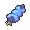 藻根果 | 藻根果 | 玉黍果 | 玉黍果 | |
| 黄色碎片 | G | 凰梨果 | 凰梨果 | 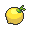 萄葡果 | 萄葡果 | 檬柠果 | 檬柠果 | |
| 绿色碎片 | 绿色碎片 | H | 西梨果 | 西梨果 | 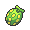 哈密果 | 哈密果 | 金枕果 | 金枕果 |
伙伴公园
伙伴公园Bulbapedia 原图
伙伴公园是浅红市北部一处特别的宝可梦保护区。训练家可以在这里把其他地区的宝可梦迁移过来，汇集自己在其他冒险中遇到的宝可梦。
迁移
迁移是永久、单向的传送方式。每次正好把 6 只宝可梦传送到伙伴公园。想得到迁移过来的宝可梦，训练家必须在「捕获秀」中把 6 只全部抓到。
捕获秀
捕获秀开始时，训练家会拿到 6 个公园球，这是一种百发百中的特殊精灵球。公园分成五种不同的环境，每只宝可梦会出现在最接近它原本栖息地的环境里。遇到宝可梦时只有两个指令：扔球和逃跑。即使从宝可梦面前逃走，在抓到它之前还能再遇到。6 只全部抓到后，训练家可以把它们传送到电脑里。
奖励
宝馆的儿子站在前台。他一眼就认出你是父亲提过的那位厉害的训练家。每次捕获秀结束，他都会送玩家一颗树果作为奖励；分数越高，树果越稀有。
| 0-3000 | 3001-3299 | 3300-3499 | 3500-4150 | ||||
|---|---|---|---|---|---|---|---|
| 利木果 | 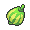 乐芭果 | 乐芭果 | 墨莓果 | 墨莓果 | 萄葡果 | 萄葡果 | |
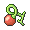 樱子果 | 樱子果 | 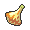 勿花果 | 勿花果 | 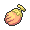 蕉香果 | 蕉香果 | 哈密果 | 哈密果 |
| 零余果 | 芭亚果 | 木子果 | 藻根果 | 藻根果 | |||
| 苹野果 | 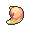 芒芒果 | 芒芒果 | 凰梨果 | 凰梨果 | 榴石果 | 榴石果 | |
| 橙橙果 | 异奇果 | 蔓莓果 | 蔓莓果 | 比巴果 | 比巴果 | ||
| 桃桃果 | 文柚果 | 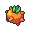 茄番果 | 茄番果 | ||||
| 柿仔果 | 西梨果 | 西梨果 | |||||
| 莓莓果 | |||||||
浅红道馆
浅红道馆Bulbapedia 原图
| 浅红市宝可梦道馆 馆主：阿杏 毒之忍者大师 |
浅红道馆专精毒属性宝可梦。毒属性招式对草属性效果绝佳，而毒属性宝可梦怕地面和超能力属性招式。
道馆馆主学过忍术，在道馆里装了一连串几乎看不见的玻璃板，让挑战者晕头转向。另外，道馆里的训练家都扮成了馆主的样子。沿着东墙走到建筑后面，再绕回前面。馆主就在建筑中央附近。
阿杏的宝可梦会用中毒和混乱让对手失去战斗力。她的叉字蝠速度快，用超能力、电、冰、岩石属性攻击能很快打倒它。她的双弹瓦斯很危险：剧毒会让对手中剧毒，大爆炸则是能造成巨大伤害的最后一招。它的物理防御很高，改用超能力属性招式攻击它较低的特防。她的两只阿利多斯会用虚张声势让对手混乱，用鬼面降低对手的速度。她的摩鲁蛾喜欢用让对手中毒和混乱的招式。它和两只阿利多斯都是虫属性，被火、岩石、飞行属性攻击打会受重伤。
| 训练家 | 宝可梦 | 奖金 |
|---|---|---|
| 野营女 Cindy | ₽768 | |
| 野营男 Barry | ₽768 | |
| 迷你裙 Alice | ₽656 | |
| 迷你裙 Linda | 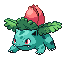 妙蛙草 Lv.43 | ₽720 |
| 宝可梦 | 详情 |
|---|---|
Lv.47 · 毒 / 飞行 | 特性：精神力 招式：奇异之光、刺耳声、翅膀攻击、超音波 |
Lv.44 · 毒 | 特性：飘浮 招式：污泥炸弹、剧毒、大爆炸、二连击 |
Lv.47 · 虫 / 毒 | 特性：不眠 招式：虚张声势、黑夜魔影、毒击、飞弹针 |
Lv.47 · 虫 / 毒 | 特性：不眠 招式：精神强念、毒击、刺耳声、飞弹针 |
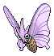 摩鲁蛾Lv.50 · 虫 / 毒 | 特性：有色眼镜 携带： 招式：影子分身、精神强念、污泥炸弹、信号光束 |
对战结束后，阿杏会授予你粉红徽章。她还会送你招式学习器84（毒击）作为奖品。
道路封闭
往南的海路被落石堵住了。据关口的警卫说，这些大石头是红莲岛火山喷发时落到这里的。离开浅红市的另一条路只有往东去15号道路。
原文：Bulbapedia《Walkthrough:Pokémon HeartGold and SoulSilver/Part 22》（修订版本 4453071，），作者见原文页面历史。本页由 Eli 的杂货间翻译为中文，并有改动（重新排版、精简部分图注）。原文与译文均以 CC BY-NC-SA 2.5 授权。配图来自原站，版权归原作者与游戏厂商。